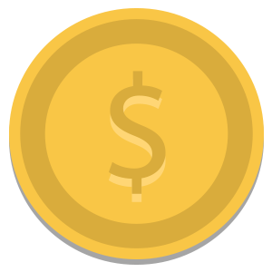

<!DOCTYPE html>
<html>

<head>
    <title>Localizing the Map</title>
    <meta name="viewport" content="initial-scale=1.0, user-scalable=no">
    <meta charset="utf-8">
    <style>
    html,
    body,
    #map-canvas {
        height: 100%;
        margin: 0px;
        padding: 0px
    }
    /*    button {
        background-color: Transparent;
        background-repeat: no-repeat;
        border: none;
        cursor: pointer;
        overflow: hidden;
        outline: none;
    }
    
    #park_button {
        position: absolute;
        bottom: 1%;
        background-color: Transparent;
        padding: 11px;
        alignment-baseline: central;
        width: 10%;
        height: 20%;
        left: 22%;
        text-align: center;
        text-decoration: none;
        margin: 0px auto;
    }*/
    
    .labels_red {
        color: #fd5c63;
        background-color: white;
        font-family: "Lucida Grande", "Aral", sans-serif;
        font-size: 14px;
        font-weight: bold;
        text-align: center;
        width: 200px;
        border: 2px;
        white-space: nowrap;
    }
    
    .labels_darkred {
        color: #CC0000;
        background-color: white;
        font-family: "Lucida Grande", "Aral", sans-serif;
        font-size: 14px;
        font-weight: bold;
        text-align: center;
        width: 200px;
        border: 2px;
        white-space: nowrap;
    }
    
    .labels_yellow {
        color: #EEEE00;
        background-color: white;
        font-family: "Lucida Grande", "Aral", sans-serif;
        font-size: 14px;
        font-weight: bold;
        text-align: center;
        width: 200px;
        border: 2px;
        white-space: nowrap;
    }
    
    .labels_green {
        color: #66DD00;
        background-color: white;
        font-family: "Lucida Grande", "Aral", sans-serif;
        font-size: 14px;
        font-weight: bold;
        text-align: center;
        width: 200px;
        border: 2px;
        white-space: nowrap;
    }
    </style>
    <script src="https://maps.googleapis.com/maps/api/js?v=3.exp&sensor=false&language=zh-TW"></script>
    <script type="text/javascript" src="http://code.jquery.com/jquery-1.7.2.min.js"></script>
    <script src="http://google-maps-utility-library-v3.googlecode.com/svn/tags/markerwithlabel/1.1.9/src/markerwithlabel.js" type="text/javascript"></script>
    <script>
    var map;
    var infoWindow;
    var parkJsonData;
    var mylat;
    var mylon;
    var kmlName;
    var mapMarker;

    var showPark;
    var showGas;
    var showWC;
    var showFix;

    var darkred = new google.maps.MarkerImage("location_darkred.png", null, null, null, new google.maps.Size(64, 64));
    var red = new google.maps.MarkerImage("location_red.png", null, null, null, new google.maps.Size(64, 64));
    var yellow = new google.maps.MarkerImage("location_yellow.png", null, null, null, new google.maps.Size(64, 64));
    var green = new google.maps.MarkerImage("location_green.png", null, null, null, new google.maps.Size(64, 64));

    //lati,longi  //25.0346882,121.5167491
    function initialize() {
        mylat = AndroidFunction.MyLoc_lat();
        mylon = AndroidFunction.MyLoc_lon();
        parkJsonData = AndroidFunction.GetParkJson(); //parking
        kmlName = AndroidFunction.kmlName();

        showPark = AndroidFunction.ShowPark();
        showGas = AndroidFunction.ShowGas();
        showWC = AndroidFunction.ShowWC();
        showFix = AndroidFunction.ShowFix();

        console.log(showPark + "," + showGas + "," + showWC + "," + showFix);

        var latlon = new google.maps.LatLng(mylat, mylon);

        var mapOptions = {
            zoom: 16,
            center: latlon //new google.maps.LatLng(25.0346882,121.5167491)
        };
        map = new google.maps.Map(document.getElementById('map-canvas'), mapOptions);

        // Register a click event to the map
        google.maps.event.addListener(map, "click", function(event) {
            console.log("i have clicked!");
            var speedLatLng = event.latLng;
            var speedlat = speedLatLng.lat();
            var speedlng = speedLatLng.lng();
            console.log(speedlat + "," + speedlng);
            displaySpeed(speedlat, speedlng);
        });

        google.maps.event.addListener(map, 'dragend', function() {
            dragendParkData(this.getCenter().lat(), this.getCenter().lng());
        });

        infoWindow = new google.maps.InfoWindow();
        var markerMy = new google.maps.Marker({
            position: latlon,
            map: map,
            icon: "iam.png"
        });
        markerMy.setMap(map);
        var kmlURL = "http://140.92.88.92:38080/TrafficPlatform/" + kmlName;
        console.log(kmlURL);
        var nyLayer = new google.maps.KmlLayer(
            kmlURL, {
                suppressInfoWindows: true,
                map: map,
                preserveViewport: true
            });
        nyLayer.addListener('click', function(kmlEvent) {
            var speedLatLng = kmlEvent.latLng;
            var speed_lat = speedLatLng.lat();
            var speed_lng = speedLatLng.lng();
            displaySpeed(speed_lat, speed_lng);
        });

        showInfo();
    }

    function showInfo() {
        if (showPark.match("1")) {
            displayParkMarkers(parkJsonData);
        }
    }

    function displayParkMarkers(parkJsonData) {

        // this variable sets the map bounds according to markers position
        var bounds = new google.maps.LatLngBounds();

        var markersData = JSON.parse(parkJsonData);
        //console.log(markersData.length);
        // for loop traverses markersData array calling createMarker function for each marker 
        for (var i = 0; i < markersData.length; i++) {
            var latlng = new google.maps.LatLng(markersData[i].latitude, markersData[i].longitude);
            var name = markersData[i].name;
            var address = markersData[i].address;
            var available = markersData[i].available;
            var payex = markersData[i].payex;

            createParkMarker(latlng, name, address, available, payex);

            // marker position is added to bounds variable
            bounds.extend(latlng);

        }
    }

    function createParkMarker(latlng, name, address, available, payex) {
        var parkIcon = new google.maps.MarkerImage("park_icon.png", null, null, null, new google.maps.Size(30, 30));

        var marker = new google.maps.Marker({
            map: map,
            position: latlng,
            title: name,
            icon: parkIcon
        });


        // This event expects a click on a marker
        // When this event is fired the Info Window content is created
        // and the Info Window is opened.
        google.maps.event.addListener(marker, 'click', function() {

            // Creating the content to be inserted in the infowindow
            var iwContent = '<div id="iw_container">' +
                '<div class="iw_title"><b><font size="4">' + name + '</font></b></div>' +
                '<font size="3">' + address + '</font><br />' +
                '<div class="iw_content"><font size="3">' + '' + "剩餘車位：" + available + '</font><br />' + '<font size="3">' + "付費方式：" + payex + '</font><br />' + '</div></div>';

            // including content to the Info Window.
            infoWindow.setContent(iwContent);

            // opening the Info Window in the current map and at the current marker location.
            infoWindow.open(map, marker);
        });
    }

    function dragendParkData(draglat, draglng) {
        if (showPark.match("1")) {
            var dragParkUrl = "http://140.92.88.92:38080/ParkingSearch/ParkingSearch?lon=" + draglng + "&lat=" + draglat + "&range=500";
            console.log(dragParkUrl);
            var parkData_drag = httpGet(dragParkUrl);
            console.log(parkData_drag);
            if (parkData_drag.length == 0) {
                alert("no data");
            } else {
                displayParkMarkers(parkData_drag);
            }

        }
    }

    function httpGet(theUrl) {
        var xmlHttp = new XMLHttpRequest();
        xmlHttp.open("GET", theUrl, false);
        xmlHttp.send(null);
        return xmlHttp.responseText;
    }

    function displaySpeed(speed_lat, speed_lng) {
        var geocodingAPI = "http://140.92.88.92:38080/RoadSpeed/getData?lon=" + speed_lng + "&lat=" + speed_lat;
        console.log(geocodingAPI);
        $.get(geocodingAPI, function(data) {
            console.log("get Data");
            console.log("Data Loaded: " + data);
            var speed = data.split(",");
            var lat = speed[0];
            console.log("lat: " + lat);
            var lng = speed[1];
            console.log("lng: " + lng);
            var speedNum = speed[2];
            console.log("speedNum: " + speedNum);
            var address = speed[3];
            console.log("address: " + address);

            var latlng = new google.maps.LatLng(lat, lng);

            if (speedNum < 20) {
                var marker1 = new MarkerWithLabel({
                    position: latlng,
                    draggable: false,
                    raiseOnDrag: false,
                    map: map,
                    labelContent: "速度：" + speedNum + "km/hr" + '</br>' + "路段：" + address,
                    labelAnchor: new google.maps.Point(22, 0),
                    labelClass: "labels_darkred", // the CSS class for the label
                    labelStyle: {
                        opacity: 0.75
                    },
                    labelAnchor: new google.maps.Point(100, 0),
                    icon: darkred
                });　
                mapMarker = new google.maps.Marker(marker1);

            } else if (speedNum >= 20 && speedNum < 50) {
                var marker1 = new MarkerWithLabel({
                    position: latlng,
                    draggable: false,
                    raiseOnDrag: false,
                    map: map,
                    labelContent: "速度：" + speedNum + "km/hr" + '</br>' + "路段：" + address,
                    labelAnchor: new google.maps.Point(22, 0),
                    labelClass: "labels_red", // the CSS class for the label
                    labelStyle: {
                        opacity: 0.75
                    },
                    labelAnchor: new google.maps.Point(100, 0),
                    icon: red
                });　
                mapMarker = new google.maps.Marker(marker1);
            } else if (speedNum >= 50 && speedNum < 80) {
                var marker1 = new MarkerWithLabel({
                    position: latlng,
                    draggable: false,
                    raiseOnDrag: false,
                    map: map,
                    labelContent: "速度：" + speedNum + "km/hr" + '</br>' + "路段：" + address,
                    labelAnchor: new google.maps.Point(22, 0),
                    labelClass: "labels_yellow", // the CSS class for the label
                    labelStyle: {
                        opacity: 0.75
                    },
                    labelAnchor: new google.maps.Point(100, 0),
                    icon: yellow
                });　
                mapMarker = new google.maps.Marker(marker1);

            } else if (speedNum >= 80) {
                var marker1 = new MarkerWithLabel({
                    position: latlng,
                    draggable: false,
                    raiseOnDrag: false,
                    map: map,
                    labelContent: "速度：" + speedNum + "km/hr" + '</br>' + "路段：" + address,
                    labelAnchor: new google.maps.Point(22, 0),
                    labelClass: "labels_green", // the CSS class for the label
                    labelStyle: {
                        opacity: 0.75
                    },
                    labelAnchor: new google.maps.Point(100, 0),
                    icon: green
                });　
                mapMarker = new google.maps.Marker(marker1);
            }

        });

    }

    google.maps.event.addDomListener(window, 'load', initialize);
    </script>
</head>

<body>
    <div id="map-canvas"></div>
    <div id="myDiv"></div>
    <!--<button id="park_button" onclick="parkFunction()"></button>-->
</body>

</html>
